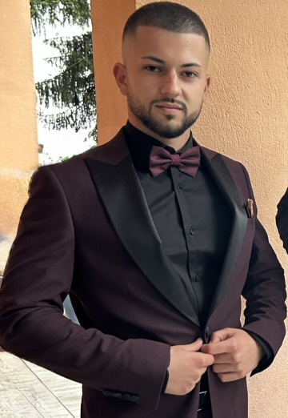

Бизнес сайт
Сайт с начална страница, услуги, информация за бизнеса и контакти.
HTML • CSS • JavaScript • PHP
Помагам на автосервизи, ресторанти, салони, автомивки и местни фирми да имат професионално онлайн присъствие.
За мен
Занимавам се с уеб разработка и създавам модерни, бързи и удобни сайтове за малки бизнеси. Работя с HTML, CSS, JavaScript и PHP.
Целта ми е сайтът да изглежда професионално, да работи добре на телефон и да помага на бизнеса да получава повече запитвания.

Услуги
Сайт с начална страница, услуги, информация за бизнеса и контакти.
Дизайн, който изглежда добре на телефон, таблет и компютър.
Контактна форма за клиенти, резервации или заявки за услуга.
Публикуване на сайта и подготовка за споделяне с клиенти.
Портфолио
Модерен сайт за автосервиз с услуги, контакти, форма за запитване и мобилна версия.
Виж проектаПредставителен сайт за ресторант с меню, информация, контакти и форма за резервации.
Виж проектаКонтакти
Свържете се с мен и ще обсъдим какъв сайт е подходящ за вашия бизнес.